Shinonsen, Hyogo: things to do, food and stays
Shinonsen · Hyogo
Shinonsen
Highlighted on the Hyogo map.
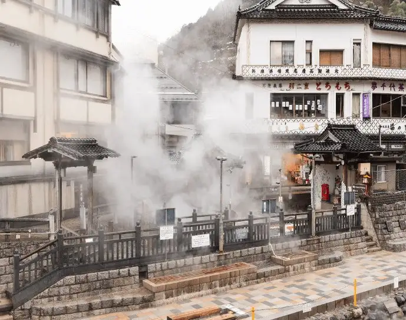
Stay
佳泉郷 井づつや
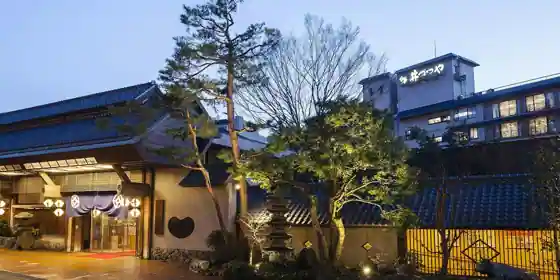
Kasen Sato I Zutsuya
Inn at Yumura Onsen in Shinonsen.
湯村温泉 朝野家
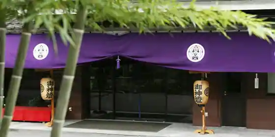
Yumura Onsen Asano Ie
Inn at Yumura Onsen in Shinonsen with open-air baths.
山陰湯村温泉 湧泉の宿 ゆあむ
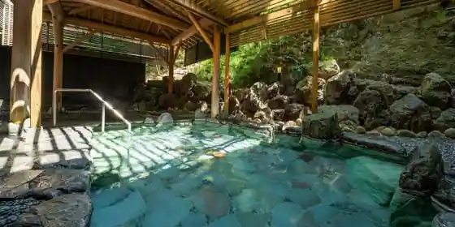
San'In Yumura Onsen Yusen No Yado Yuamu
Inn at San'Inyumura Onsen in Shinonsen with open-air baths.
湯村温泉 緑屋
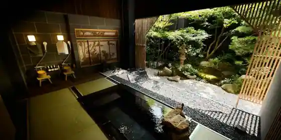
Yumura Onsen Midoriya
Inn at Yumura Onsen in Shinonsen with private baths and family-friendly stays.
湯村温泉郷 御宿コトブキ
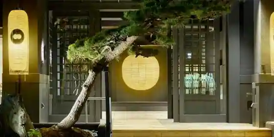
Yumura Onsen Sato Onjuku Kotobuki
Inn at Yumura Onsen in Shinonsen.
湯村温泉 自家源泉のお宿 とみや
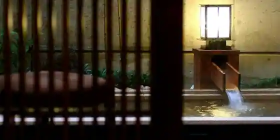
Yumura Onsen Jika Gensen No Yado Tomiya
Inn at Yumura Onsen in Shinonsen.
LOCA THE JUNPU
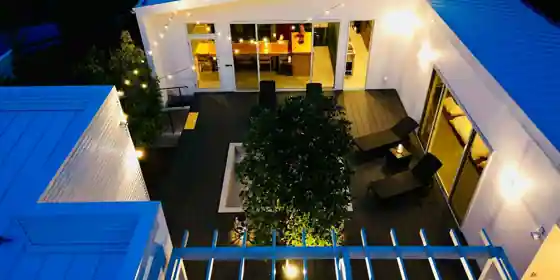
LOCA THE JUNPU
Inn at Mikatagunshin Onsen in Moroyose, Shinonsen.
旅館 割烹 荒岩
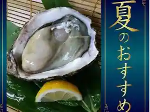
Ryokan Kappo Araiwa
Ryokan inn at Mikatagunshin Onsen in Hamasaka, Shinonsen.
かにソムリエの宿 澄風荘
Kani Somurie No Yado Sumi Kaze So
Inn at Mikatagunshin Onsen in Hamasaka, Shinonsen.
別館カワナツ
Bekkan Kawanatsu
Inn at Mikatagunshin Onsen in Hamasaka, Shinonsen with pet-friendly rooms.
カニのまち浜坂の料理宿 芦屋荘
Kani Nomachi Hamasaka No Ryori Yado Ashiya So
Inn at Mikatagunshin Onsen in Ashiya, Shinonsen with local seafood dinners.
カニ元浜坂 海幸の宿 浜石
Kani Motohama Saka Umisachi No Yado Hamaishi
Inn at Mikatagunshin Onsen in Ashiya, Shinonsen.
Dining
湧泉の宿 ゆあむ
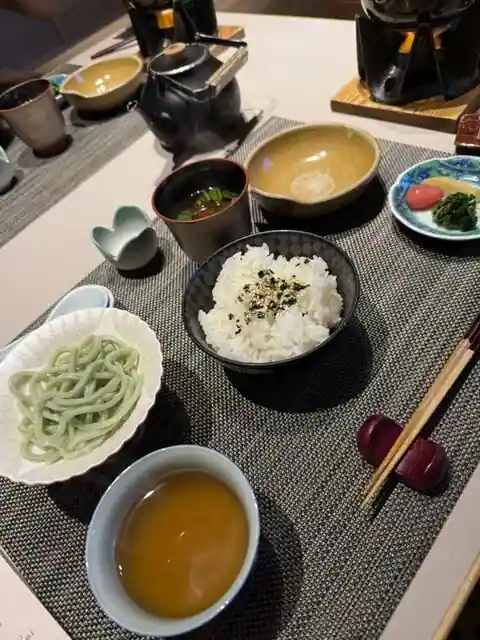
Yusen No Yado Yuamu
お食事処 味波季
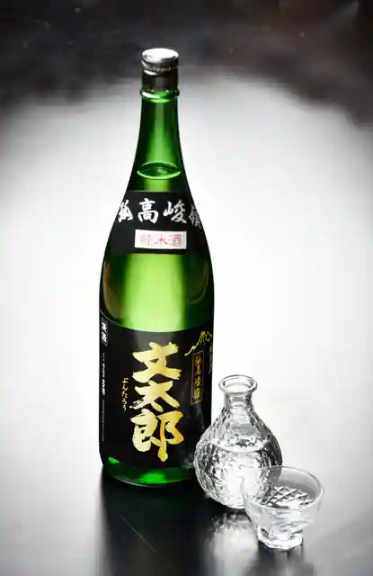
O Shokuji Tokoro Aji Nami Ki
但馬ビーフレストラン楓
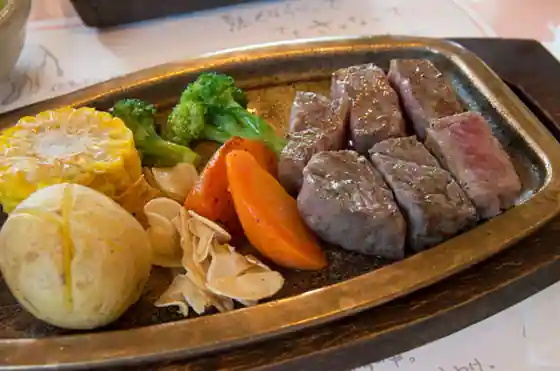
Tajima Bifu Restaurant Momiji
そば処 春来てっぺん
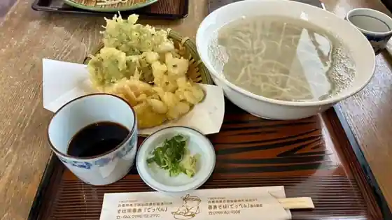
Soba Tokoro Haru Kite Ppen
総本家 栃泉
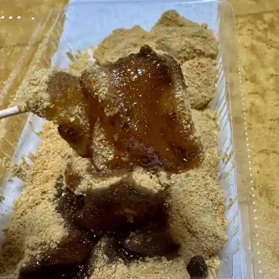
So Honke Tochi Izumi
そば処 春来 てっぺん 道の駅店
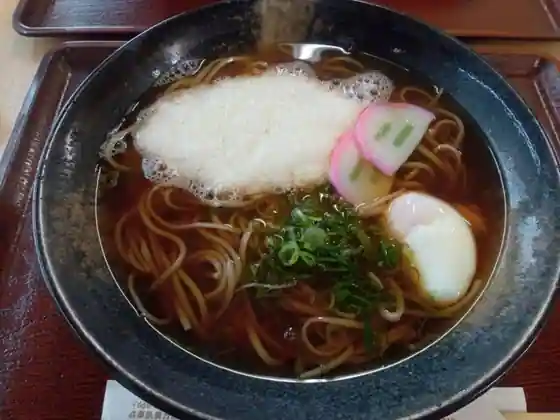
Soba Tokoro Haru Rai Teppen Michi No Eki
ひよっ子屋
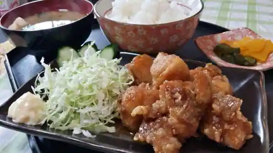
Hiyotsu Ko Ya
隆栄
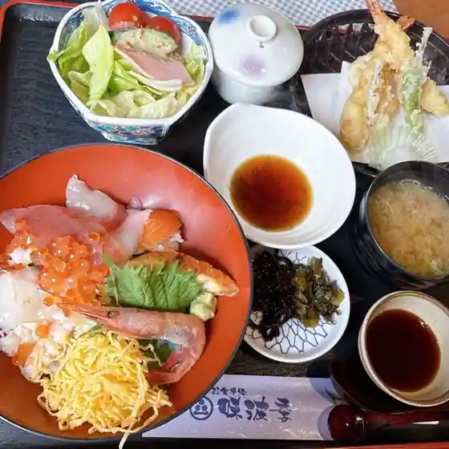
Takashi Sakae
朝野家
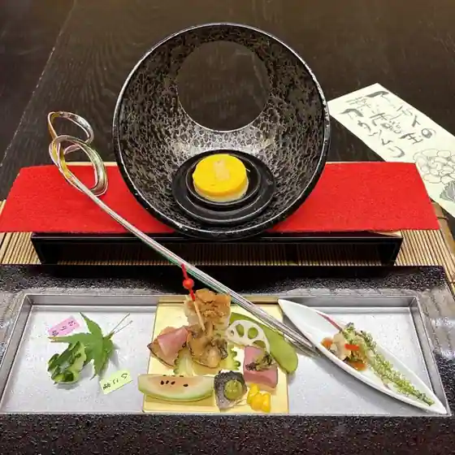
Asano Ie
みさきや
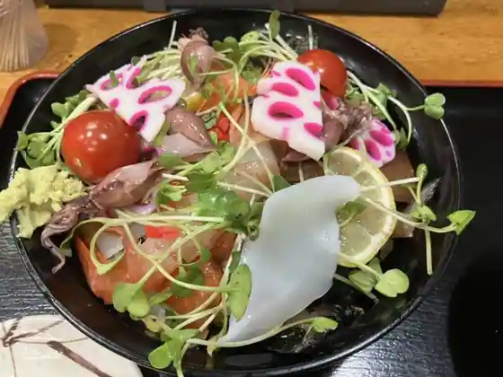
Misakiya
たじま屋食堂
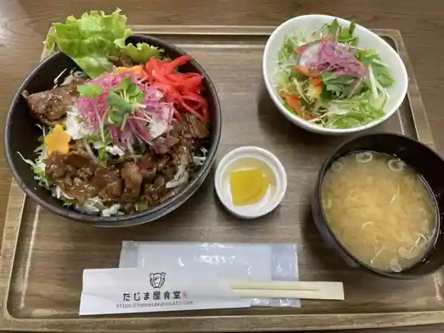
Tajima Ya Shokudo
但馬牛料理はまだ
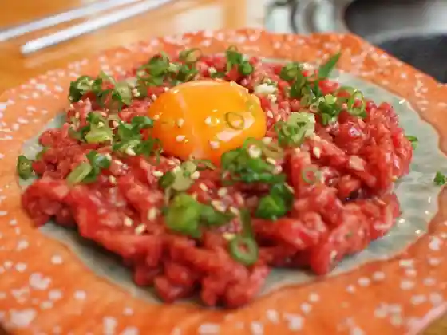
Tajima Ushi Ryori Hamada
cafe bloom
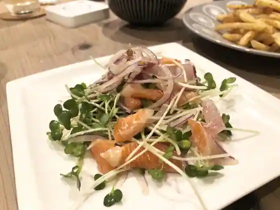
cafe bloom
芦屋荘
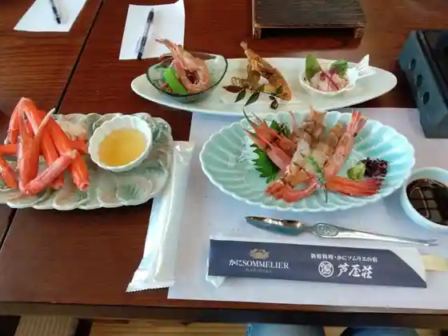
Ashiya So
おばあカフェゆむら屋
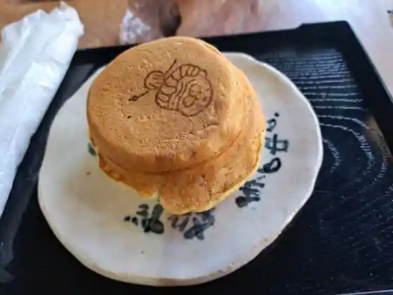
Oba Cafe Yumura Ya
笑来園
Warai Raien
力餅
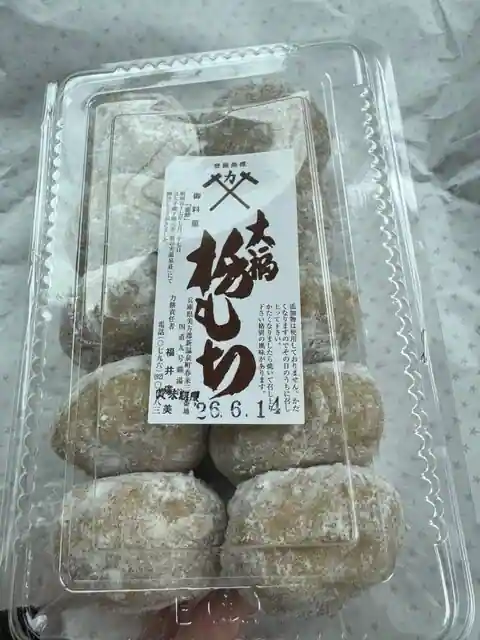
Chikaramochi
こう屋旅館
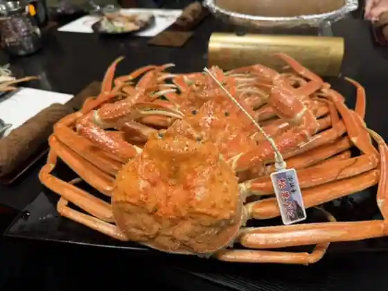
Ko Ya Ryokan
山陰海岸ジオパーク浜坂の郷
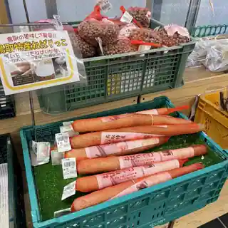
San'In Kaigan Jio Park Hamasaka No Sato
御宿コトブキ
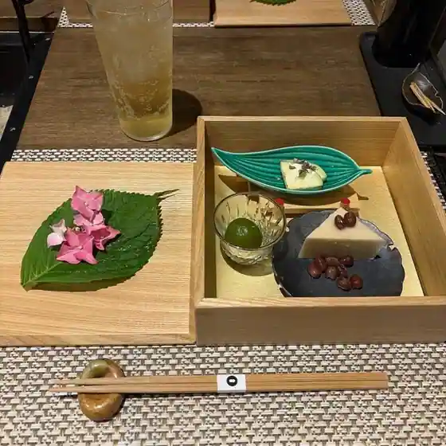
Onjuku Kotobuki
魚と屋
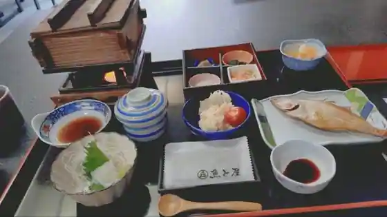
Sakana To Ya
といろ
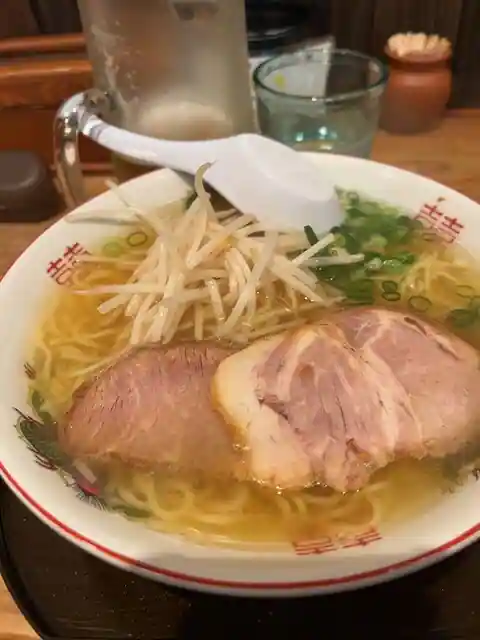
Toiro
自家製うどん あづま
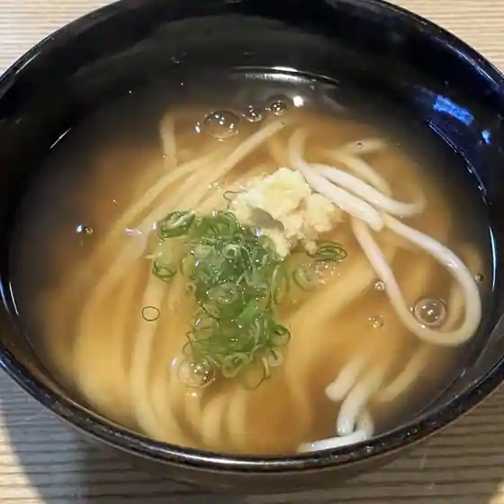
Jikasei Udon Azuma
Sights
Yumura Onsen Townscape
Compact hot-spring street with steam vents and walking routes through Yu district